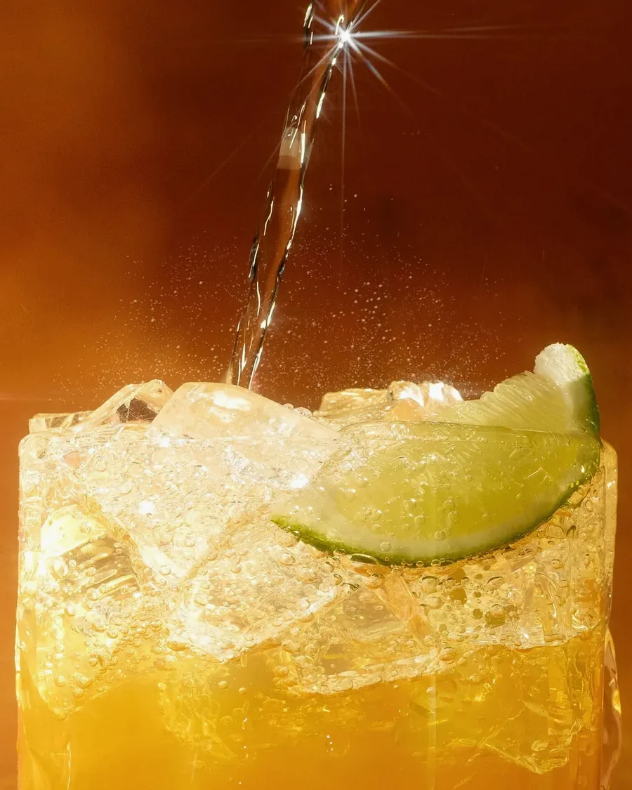
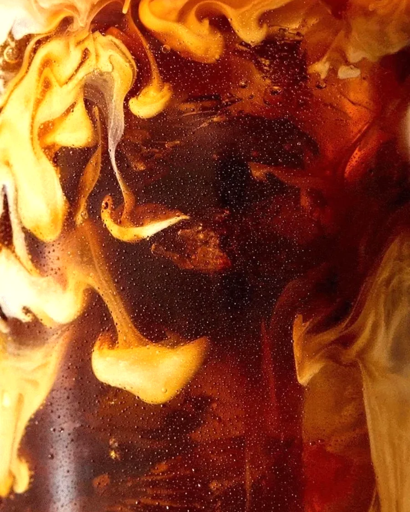
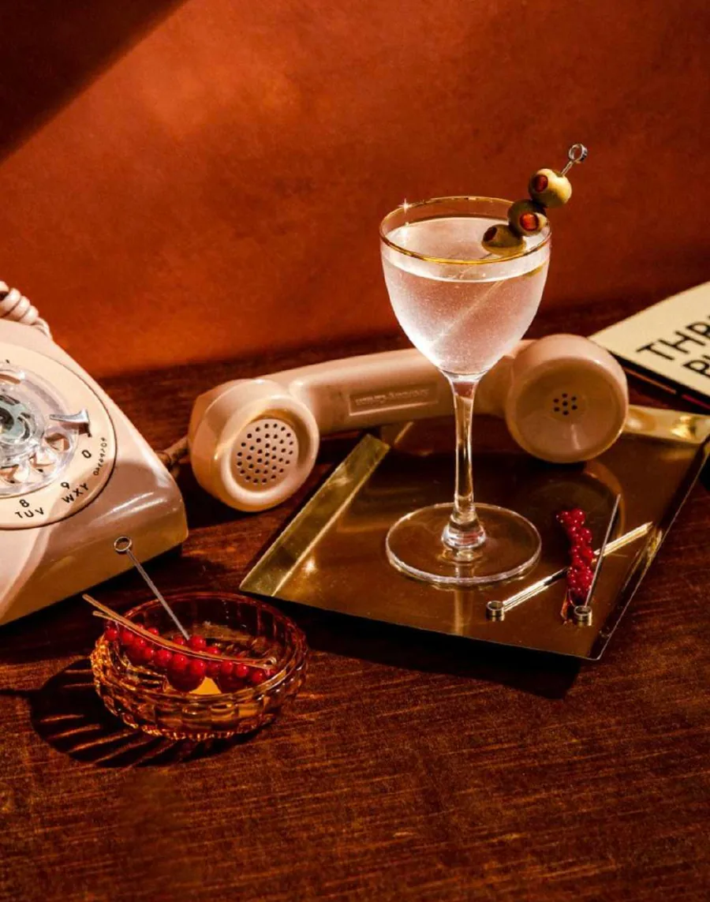
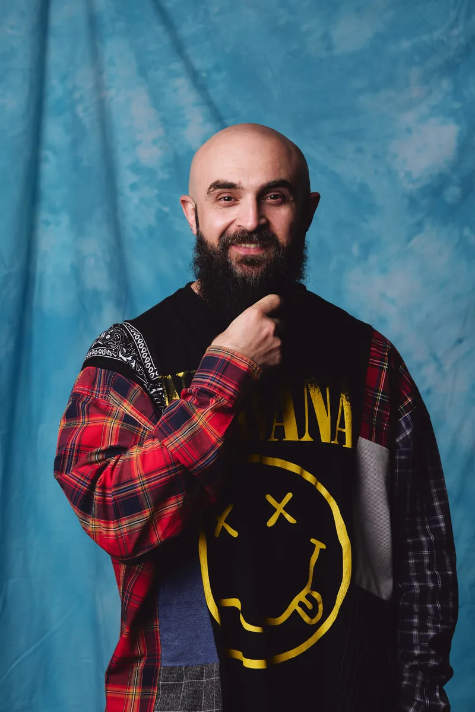
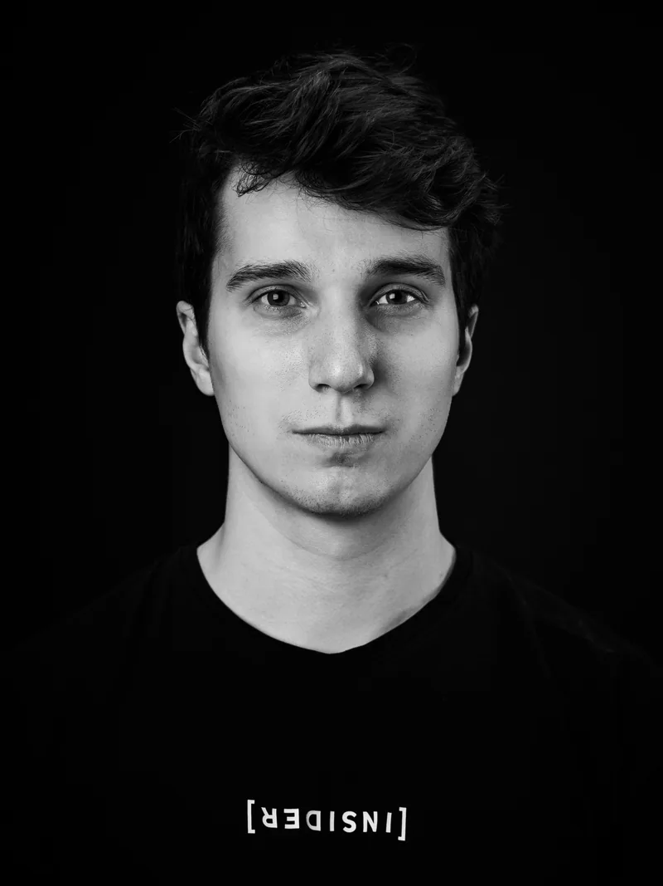
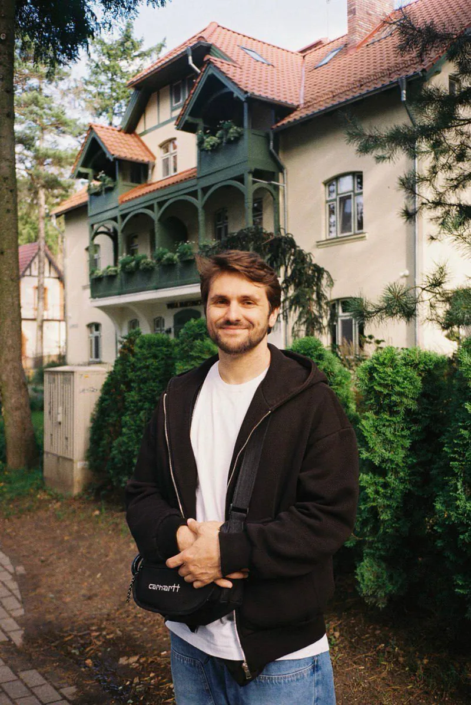
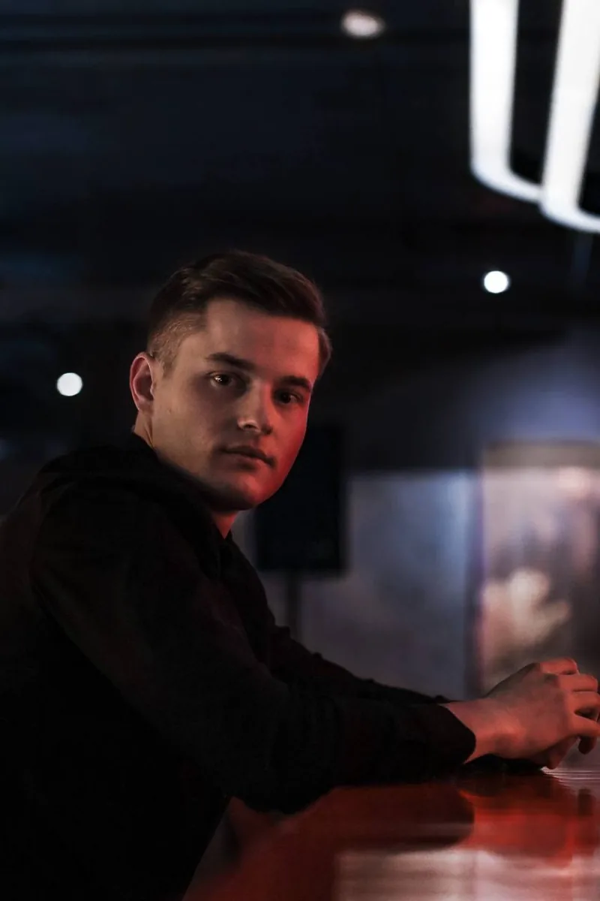

С 2016 года создаём и улучшаем кофейни, бары и рестораны, закрывая полный цикл: от концепции до операционки
Три сценария работы
Открываете
с нуля
Помогаем спроектировать концепцию, карту напитков и запустить точку без типичных ошибок старта.

Упёрлись
в потолок
Разбираем, где теряются деньги и гости, и выстраиваем систему вместо ручного управления.

Хотите
масштабироваться
Готовим бренд, стандарты и экономику так, чтобы формат можно было тиражировать.

Бары, рестораны, кофейни — система одна
Работаем со всем циклом заведения
Система, а не один напиток
- Концепция и бренд — позиционирование, имя и характер места
- Айдентика и пространство — от знака и посуды до зала и рабочих зон
- Карты и кухня — напитки, завтраки, десерты
- Обучение и стандарты — база знаний, регламенты, аттестации
- Операционка и экономика — процессы и себестоимость
- Масштабирование — формат, который можно повторить
Пространство и стойка
- Проект под задачу — бары, рестораны и кофейни под бренд и трафик
- Функциональная стойка — дизайн работает на скорость и логику
- Эргономика против ФОТ — верная стойка экономит состав смены
- Ведём до открытия — цикл от старта до запуска 3–4 месяца
Menu engineering
- Сенсорика — тестирование ингредиентов и поставщиков
- Точные рецептуры — которые повторит любая смена
- Баланс — вкуса, скорости отдачи и себестоимости
- Авторские позиции — те, что становятся «героями» карты
- Визуал подачи — посуда, язык кадра, соцсети
- ТТК и калькуляция — на каждую позицию карты
- Вся линейка — коктейли, кофе, чай, шейки, лимонады, сезонное
Операционка и экономика
- Операционка целиком — процессы, контроль и стандарты на нас
- Себестоимость и маржа — по каждой позиции, а не «в среднем»
- Фудкост, списания, потери — видно, где утекают деньги
- Отчёты и инвентаризация — контроль остатков без сюрпризов
- Закупки и поставщики — условия, сроки, замены
- ФОТ и загрузка смен — состав смены под реальный поток
- Ежемесячный отчёт — план и факт по продажам, разработке и костам
Обучение и стандарты
- Техника приготовления — и настройка оборудования
- Сервис и скорость — отдавать быстро, не теряя качество
- Санитарные нормы — и ежедневная инвентаризация
- Аттестации — регулярно, а не раз в год перед проверкой
- База знаний — всё в одном месте и под рукой у смены
- Механики продаж — под формат и аудиторию проекта
- Помощь с подбором — анкета, критерии, финальное собеседование
Поставки и оборудование
- Оборудование под поток — не по каталогу, а под формат
- Поставки под ключ — зерно, молоко, сиропы, алкоголь, упаковка
- Условия напрямую — от производителей и контрагентов
- Скидки и спецбюджеты — включая маркетинговые интеграции
- Без коррупции — без откатов и скрытых комиссий, это принцип
Документы и безопасность
- Роспотребнадзор — контролируем выполнение требований
- Рабочая документация — регламенты на каждый этап
- Рабочие бланки — чек-листы, стоп-листы, бланки заказа, go-list
- Оценочные листы — аттестация персонала по прозрачным критериям
Наши проекты
Собраны наиболее знаковые проекты, реализованные командой BARPOINT
BARPOINT в лицах
Артур Шустериовас
Co-founder BARPOINT
Co-founder PIMS, Origin Group
Креативный директор PIMS

Тимур Бегляров
Co-founder BARPOINT
Co-founder PIMS

Владимир Маяков
Co-owner BARPOINT
Co-owner RU / MENA
Ex-идеолог INSADER BAR
Ex-директор по напиткам GT.GROUP

Руслан Марушко
Creative Head Bartender
& R&D Lead
Авторские коктейли и барные карты
Лаборатория вкуса и коллаборации

Александр Гордышев
Operational Head Bartender
Процессы, стандарты, качество
Экономика, обучение, аттестации